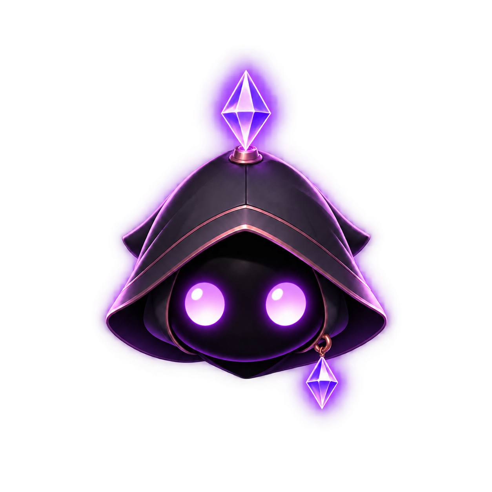

AYLUL listening animation
Local/test-only review of the listening slice. This page does not connect to program events, a backend, Shadows, or Planner logic.
Loading metadata…

Fixed 1254 × 1254 transparent canvas; fixed pivot at (627, 1102). The body stays still while eye illumination and the two existing crystal glows respond in sequence. Reduced-motion preferences stop automatic playback. Runtime binding is deferred.